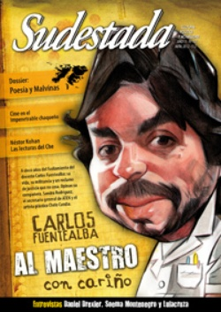

Buscar
El Superochista
Imágenes del documentalista rosarino por excelencia. Mario Piazza, y una visita a su vida y a su visión: la del héroe singular que, alejándose de los modelos establecidos del éxito, los denuncia, y que al amalgamar lo único y lo cotidiano presenta su orgullosa proclama; la de haber descubierto para sí las más valiosas resignificaciones del tiempo.
Edición N° 107
Abril 2012
Revista bimensual
Comprar edición impresaSumario
- Al maestro, con cariño
- Un país sin laburantes
- Moebius
- Poesía y guerra
- Las lecturas de un hereje
- "Tuvimos que filmar lo que El Impenetrable y su gente nos imponían"
- "Algo se materializa a través de la voz"
- "Mi diario de viaje son las canciones"
- Un rebelde colgado del alambrado
- El Superochista
Compartir Articulo
La imagen en la pantalla acusa un desfasaje, un destiempo. En la pequeña e improvisada sala de cine, no del todo oscura, se observa la inmóvil silueta de un puñado de concurrentes que intenta atender la trama, donde un personaje se apresura y se desacelera alternativamente, indeciso, tratando de capturar con su boca las palabras que él mismo está diciendo.
Promediaba el año 1974, y era un joven de 17 años, futuro estudiante de ingeniería electrónica, hábil para las matemáticas, el que manipulaba concentrado y calmo un ruidoso proyector de velocidad regulable, con el fin de hacer coincidir la película con los sentidos. Había tomado la filmadora Súper 8 de su padre y, grabando minuciosamente el audio por separado, logrado finalmente algo mágico: componer un film, ese mismo que ahora exponía por primera vez, levemente ansioso, intentando hacer coincidir su mirada de la realidad con el sonido de su propio tiempo.
Hoy, a los 55 años, ese joven autodidacta que fue Mario Piazza se convirtió en un valiosísimo referente para los realizadores argentinos y, sin lugar a dudas, es el gran documentalista Rosarino.
¿Pero qué pasó en el medio? ¿Cómo transcurrió su camino este rosarino-cineasta de raza? En esta entrevista, Mario Piazza nos acompaña en un pequeño paseo por fragmentos de su vida y obra, y nos desafía a que ahora seamos nosotros los que logremos hacer que las imágenes de su historia se apeguen al ritmo pausado y preciso de su voz, mientras ésta nos explica: "Efectivamente, yo creo que hay una analogía entre las formas de un cineasta en sus películas y su forma de expresión verbal. Me gustaría ser más prolífico y también más locuaz. Pero a la vez no quiero resignar una cierta profundidad en los filmes que haga. Y eso demanda tiempo".
Período heroico
-Todas las crónicas mencionan tu nacimiento en Nueva York y tu llegada definitiva a Rosario a los diez meses de edad. ¿Por qué naciste ahí, y por qué terminaste en Rosario?
-A mi padre le salió en 1955, recién recibido como médico, una oportunidad de trabajo y desarrollo profesional en un hospital de Nueva York. Todavía no estaba casado con mi madre. De modo que se casaron medio "de apuro" y se fueron para esa ciudad. Allí fui concebido y parido, como un rosarino exiliado desde el inicio. Y una cierta sensación de "extranjeridad" me ha acompañado casi todo el tiempo, en casi todos lados.
-En 1973 ganaste un premio nacional en las Olimpíadas matemáticas. Siendo que fue tu primer amor, ¿por qué la cambiaste por el cine? ¿Y cómo influyó la matemática en tus películas?
-Estudié en Ciencias Exactas (en la Universidad Nacional de Rosario) pero no completé la carrera. Al principio tenía facilidad para las matemáticas y lo de la Olimpíada fue como un juego, los desafíos que planteaban los problemas de la competencia eran ésos. Pero la carrera no lo era, y en la medida en que avanzaba en los estudios cada vez me costaba más y cada vez menos entendía para qué quería aprender lo que estaba tratando de aprender. Ya había hecho mis primeros cortos y descubría mi vocación por el lado del cine, aunque en ese momento no le llamase vocación. Todavía no había escuelas de cine en Rosario ni en la provincia: la de Santa Fe acababa de cerrar. Estábamos bajo dictadura y el clima era bastante cerrado. Cuando cambiaron el plan de la carrera de Ingeniería y le agregaron un año, abandoné los estudios para dedicarme al cine por la propia, lo que significó poco menos que un salto al vacío.
Hoy ya ni me acuerdo cómo se resuelven una derivada o una integral, cosas que en su momento sí las supe. Pero pienso que acaso haber ejercitado la mente como para entender aquellas abstracciones puede haberme ayudado para pensar las cosas de otra manera y acaso esto pueda haberme servido en la realización de mis filmes.
(La nota completa en la edición gráfica de Sudestada Nº 107 - abril 2012)
Comentarios
Guillermo Gugliotti
Articulos más vistos


LIBRERÍA SUDESTADA

Colección infantil

Distribuidora de Libros

Suscripción

Sudestada en URUGUAY

Otros articulos de esta edición
 30 años de Malvinas
30 años de Malvinas
Poesía y guerra
Aún en las islas, a la espera del ataque inglés, con un resto de lápiz y apoyándose sobre el cañón ...
 Malditos: Kurt Lutman
Malditos: Kurt Lutman
Un rebelde colgado del alambrado
Un futbolista diferente que fomentó siempre la solidaridad y lo colectivo. Un rebelde que militó en HIJOS, ligó un cuchillazo ...
Al maestro, con cariño
A cinco años del fusilamiento del docente Carlos Fuentealba en el sur argentino, un repaso por su vida, su militancia ...
 Entrevista con los realizadores de Campo Grande, documental sobre el Impenetrable chaqueño
Entrevista con los realizadores de Campo Grande, documental sobre el Impenetrable chaqueño
"Tuvimos que filmar lo que El Impenetrable y su gente nos imponían"
Un equipo de documentalistas cuenta la difícil tarea de atravesar El Impenetrable para narrar la historia de dos familias, herederas ...